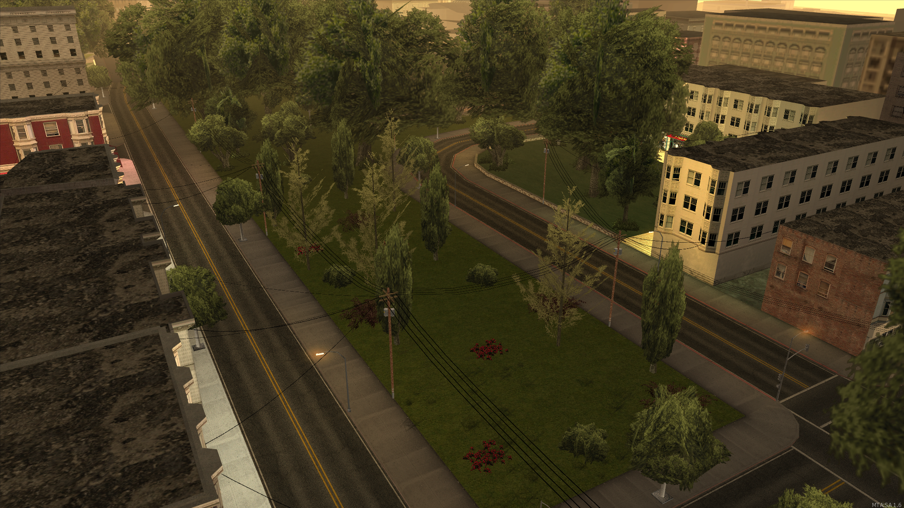

Baza Frakcyjna
Baza Frakcji SARA
Cału exterior bazy frakcji SARA
Tworzę lokacje, interiory i tereny pod serwery MTA:SA. Czyste obiekty, dopracowane detale i mapy gotowe do wrzucenia na serwer.
Podmień obrazki w folderze images/ na swoje screeny.
Cału exterior bazy frakcji SARA
wrzuć images/mapa-2.jpg
Parkiet, VIP, bar i zaplecze. Klimat nocny, dużo detalu.
 wrzuć images/mapa-3.jpg
wrzuć images/mapa-3.jpg
Salon, zbrojownia, garaż i dziedziniec. Pod RP gangowe.
 wrzuć images/mapa-4.jpg
wrzuć images/mapa-4.jpg
Hala, podnośniki, biuro i plac manewrowy.
 wrzuć images/mapa-5.jpg
wrzuć images/mapa-5.jpg
Nowoczesne mieszkanie pod high-tier housing.

wrzuć images/mapa-6.jpgShop, dystrybutory, myjnia i parking TIR.
Cześć, jestem TWOJ NICK. Mapuję pod MTA:SA — od małych interiorów po większe lokacje pod serwery RP. Stawiam na czytelny układ, performance i detale, które widać z poziomu gracza, nie tylko ze screena.